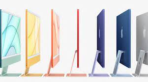
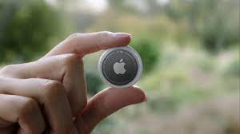
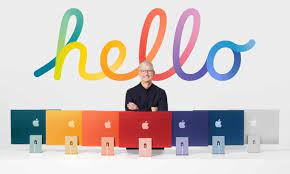

Spring Loaded... Hmmm...
So yet another apple event. Yep. And there were some pretty big product unveilings. The Airtags, the new M1 iMacs (super thin and in different colors) and the M1 iPads. And out of all their events, most of these products sit pretty well with me. For people that know me I am pretty anti-apple biased, and normally watching these events is just me picking apart every little flaw. I must say I had a harder time doing that this time. I will try and make the rest of the article less biased but I will definitely point out flaws where they deserve to be pointed out.
So the first big unveiling was the AirTags. Basically a tile where you can find items that you may lose easily like your keys using the “find my” app. Pretty cool, pretty cool, and the price is actually pretty reasonable, shockingly. $29 for 1 and $99 for 4. Now the problem I have with them is the price for the key loops. Those are kinda insane. Even the least expensive ones cost 12.95, and that’s the Belkin one. The apple ones cost $29 and $39, which is a little ridiculous. That costs nearly as much as the AirTag. But of course there will be generic ones coming along that will save people some money. So yeah, Apple makes something remotely affordable and then makes the accessories cost an insane amount. Kinda like them.
The new M1 iMacs! Interesting! So instantly what we notice is of course the colors. And wow there are a lot of them. It’s sort of cool but it almost seems gimmicky. We expected them to add the M1 to the iMac anyways considering it was already in the macbook pro and stuff, so they wanted some reason for people to pay attention to it. I like the thin minimalist design, it’s nice. Some colors are a bit over the top, I can’t help but notice. Like the yellow? WOW. You’re making a statement with that thing on your desk. If I were to pick any of the colors I’d probably go with blue since it’s not over the top but it’s not a boring gray either. That is all aside the point though. It is an overpriced computer ($1300 base price) that only gets you some okay specs at base. That comes with an 8 core M1, 8gb RAM, and 256gb storage? For $1300? I mean I feel like it would be in Apple’s best interest to just erase the 256gb option all together, it would make them look cutting edge, plus it really makes you feel like you’re getting scammed when you pay $1300 for 256gb. And let’s not forget that many other computers already come in different colors! The surface has multiple different color options (as flawed as surface is), and they didn’t make a huge deal out of it! It’s just something tech has! Though I can’t blame them for highlighting their aesthetics since it is an important part of the product experience. Torn on the new iMac, yes indeed I am.
The final major thing they revealed was the M1 iPad. Now this was interesting. Some people suspected this but it still sort of came as a surprise to people. Tim Cook had to break into apple park, mission impossible style to put the M1 in the iPad, which was the best part of the whole event. But this actually is a big step of progress since making the iPad and the Mac with the same architecture will make developers have a reason to develop apps that are cross platform for both, part of Apple’s connected world vision. And the M1 is a pretty powerful chip, the issue is that it’s new to everyone to develop for it. Plus this thing’s got up to 2 terabytes, which is really overkill but at the same time kinda cool. Issue is all this comes with a HUGE price tag. I mean huge. Starting at $800. And the guess I made while I was watching the apple event was right: Wow, you’re probably gonna end up paying at least a dollar a gigabyte on that 2tb option. And right I was. To get the 12.9 inch, 2tb configuration you will pay a whopping $2200. For a tablet. Add the cellular configuration and you’re up to $2400. And if you want the apple pencil along with your iPad, just spend another $129. So you’re at $2529. For a tablet. Kinda obscene. A cool product, but obscene amount of money.

In this article I didn’t mention things like the new Apple TV or the purple iPhone. The Apple TV 4k was expected, but way overpriced. I could get a 4k Roku for about $50, whereas the Apple TV costs over $100. The purple iPhone isn’t super noteworthy. Samsung has plenty of purple phones, but you don’t buy the phone for the color. An interesting event and I liked it since it was focused very heavily on the specs, but since it is Apple, it was a bit insane at the same time.